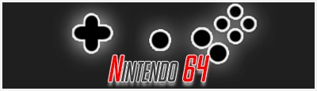

HOME
NES
SNES
GBA

Aero Fighter Assault
Asteroids Hyper 64
Banjo Kazooie
Banjo Tooie
Batman Beyond : Return of the Joker
Body Harvest
Bomberman 64
Carmageddon 64
Castlevania 64
Chamaleon Twist 2
Conquer´s Bad Fur Day
Dr Mario 64
Donkey Kong 64
Duke Nukem 64
Diddy Kong Racing
F-Zero
Fighting Force 64
Forsaken
Flying Dragon
Golden eye 007
LooneyTunes:Duck Dodgers
Killer Instinct Gold
Kirby 64
Mario party 1
Mario Party 2
Mario Party 3
Mario Tenis
Mario golf
Mario Kart 64
Mortal Kombat 4
Perfect Dark
Pokemon Stadium
Pokemon Stadium 2
Pokemon stadium Pack (1 and 2)
Paper Mario
Super Mario 64
Super Smash Bros 64
Superman 64
Star Fox 64
Star Wars: Rogue Squadron
Rayman 2:The great scape
Resident Evil 2
The Legend Of Zelda: Ocarina of Time
The Legend Of Zelda:Majoras Mask
Turok:Dinosaur hunter
Turok 2:Seeds of Evil
Turok 3:Shadows of Oblivion
Wave race 64
here you can download
Project 64 emulator
!